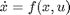
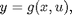
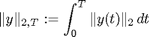
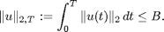
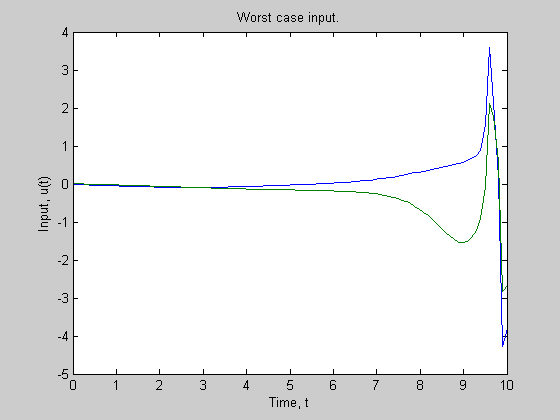
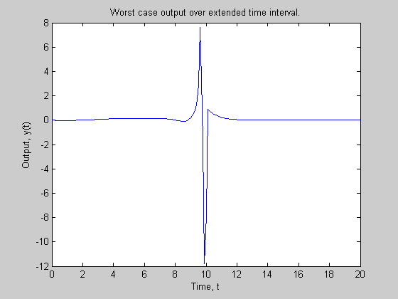
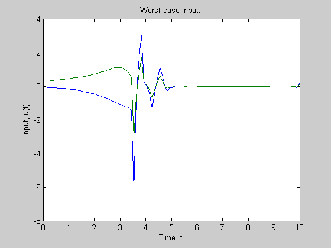
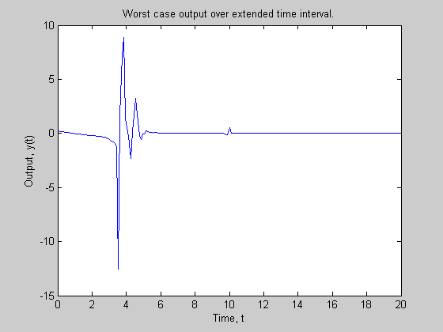

Using the Worstcase Solver - Demo 1
The worstcase solver is used to find the induced L2-to-L2 gain of a four-state nonlinear system.
Timothy J. Wheeler
Dept. of Mechanical Engineering
University of California, Berkeley
Contents
Introduction.
Consider a dynamic system of the form


where x(0)=0. Given positive scalars B and T, the goal is to maximize

subject to the constraint

Note: we only consider inputs and outputs defined on the interval [0,T].
System parameters.
This system is parameterized by the following constants:
lam = 1; PL = 1; gammaX = 1; gammaR = 1; A = 0.8; tau = 1; K0x = (-1/tau - A)/lam; K0r = (1/tau)/lam;
Create a model of the system.
First, polynomial variables are created using the pvar command. Then, these variables are used to define the functions f and g, which are also polynomial variables.
pvar x1 xm zx zr r w states = [x1;xm;zx;zr]; inputs = [r;w]; f(1,1) = A*x1 + lam*((zx+K0x)*x1 + (zr+K0r)*r) + w; f(2,1) = (1/tau)*(-xm+r); f(3,1) = -gammaX*x1*(x1-xm)*PL; f(4,1) = -gammaR*r*(x1-xm)*PL; g = ((zx+K0x)*x1 + (zr+K0r)*r) + w;
Then, a polysys object is created from the polynomials f and g.
sys = polysys(f,g,states,inputs);
The polynomial objects states and inputs specify the ordering of the variables. That is, by setting states(1) = x1, we specify that f(1) is the time derivative of x1.
Optimization parameters.
Use the following values for the optimization parameters (defined above):
T = 10; B = 3;
The time vector t specifies the time window (T = t(end)) and the points at which the system trajectory is computed.
t = linspace(0,T,100)';
Set options for worstcase solver.
Create a wcoptions object that contains the default options.
opt = wcoptions();
Specify the maximum number of iterations and which ODE solver to use.
opt.MaxIter = 50;
opt.ODESolver = 'ode45';
Tell the solver to display a text summary of each iteration.
opt.PlotProgress = 'none';
Specify the optimization objective, and the bound on the input.
opt.Objective = 'L2';
opt.InputL2Norm = B;
Find worstcase input.
[tOut,x,y,u,eNorm] = worstcase(sys,t,opt);
Simulate with worstcase input.
We can only compute the worstcase input over a finite interval of time [0,T]. However, any response of the system that occurs after the input is "shut off" (i.e., u(t) = 0 for t > T) should contribute to our objective. Hence, we compute a more accurate value of the objective by continuing the simulation from the end of the previous trajectory with no input:
[te,xe,ye] = sim(sys,tOut,x(end,:)'); td = [tOut;tOut(2:end)+max(tOut)]; yd = [y;ye(2:end)];
The objective value over [0,T] is
eNorm
eNorm =
4.7436
The objective value over [0,2T] is
eNormd = get2norm(yd,td)
eNormd =
4.9622
Display results.
fprintf( 'The L2-to-L2 gain is %f\n', eNormd/B ); figure; plot(tOut,u) xlabel('Time, t') ylabel('Input, u(t)') title('Worst case input.') figure; plot(td,yd) xlabel('Time, t') ylabel('Output, y(t)') title('Worst case output over extended time interval.')
The L2-to-L2 gain is 1.654050 
Specifying a starting point.
By default, the worstcase solver starts with a constant input and then searches for a better input. Since this problem is nonconvex, this search may get "stuck" at a local optimum. We can help the solver by specifying a sensible starting point that is known to exhibit a large output.
load demo1_badInput
u0 = B * ubad/get2norm(ubad,tbad);
opt.InitialInput = u0;
Run solver again.
[tOut,x,y,u,eNorm] = worstcase(sys,t,opt);
Extend this simulation.
[te,xe,ye] = sim(sys,tOut,x(end,:)'); td = [tOut;tOut(2:end)+max(tOut)]; yd = [y;ye(2:end)];
The objective value over [0,T] is
eNorm
eNorm =
5.0020
The objective value over [0,2T] is
eNormd = get2norm(yd,td)
eNormd =
5.0029
Note that we achieve a larger value of the objective when we start the solver at u0.
Display new results.
fprintf( 'The L2-to-L2 gain is %f\n', eNormd/B ); figure; plot(tOut,u) xlabel('Time, t') ylabel('Input, u(t)') title('Worst case input.') figure; plot(td,yd) xlabel('Time, t') ylabel('Output, y(t)') title('Worst case output over extended time interval.')
The L2-to-L2 gain is 1.667635 